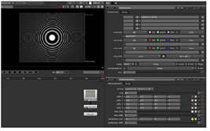

Open topic with navigation
Applying Expressions to Channel Values
Up till now, the discussion has focused on how to apply simple mathematical formulae - additions, subtractions, multiplications, etc. - to a channel’s values. Nuke’s Expression node, however allows you to apply complex formulae to a channel’s values. The actual syntax for expressions is rather complex, and thus must be deferred to Expressions. For now, you can read about the basics of how to operate the Expression node.
To apply expressions to channel values
|
1.
|
Click Color > Math > Expression to insert an Expression node at the appropriate point in your script. |
|
2.
|
Connect a Viewer to the output of the Expression node so you can see the effect of your changes. |
|
3.
|
In the Expression properties panel, use the channel dropdown menus and buttons to select the channel to which you wish to apply an expression. |
|
4.
|
Type the actual expression in the = field next to the channel. |
For example, to assign noise to the red channel, then boost the gain of that result by 20 you would type (random*r)*20.
|
5.
|
If necessary, you can apply different expressions to different sets of channels by repeating the above steps for the other channel dropdown menus and buttons. |
|
6.
|
If you need to use a long expression in several fields, you can use the fields on top of the properties panel for assigning the expression temporarily to a variable. Enter your variable on the left side of the = sign, and the expression on the right. You can then use the variable to represent the expression in the = fields next to the channels. |
|

|
A checkerboard modified using an
Expression node. |